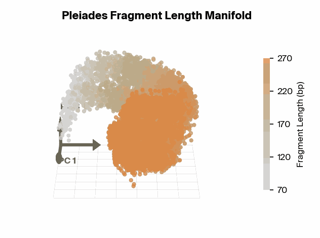

アルツハイマー病（Alzheimer’s Disease: AD）の早期発見、特に血液サンプルを用いた非侵襲的な診断手法の確立は、長らく医学研究における聖杯の一つとされてきた。近年、Prima Mente社が開発したエピジェネティック基盤モデル「Pleiades」を用いた研究において、AD検出における重要なブレイクスルーがもたらされた。
しかし、この研究の真の革新性は、単にAIが高い精度で疾患を予測した点にはない。Mechanistic Interpretability（機械論的解釈性） の技術を適用することで、AIが「なぜ」その結論に至ったのかを解明し、その過程で人間が見落としていた新たな生物学的バイオマーカーのクラス――フラグメントミクス（Fragmentomics）――を再発見した点にある。
本稿では、AIがいかにしてブラックボックスから脱却し、科学的発見のパートナーとなり得るかについて、Pleiadesの事例を通じて解説する。
Pleiades：エピジェネティクスのための基盤モデル
Pleiadesは、70億（7B）パラメータを持つエピジェネティック基盤モデル（Epigenetic Foundation Model）である。このモデルは、人間のメチル化データおよびゲノム配列データという膨大なコーパス（約1.9兆トークン）で事前学習されている。
従来の言語モデル（LLM）がテキストの文脈を学習するように、PleiadesはDNA配列だけでなく、遺伝子制御に影響を与えるエピジェネティックなマーク（メチル化など）を含む複雑な生物学的パターンを学習している。血液中に浮遊するcfDNA（Cell-free DNA：無細胞DNA） に適用された際、Pleiadesは単なる塩基配列の情報のみならず、cfDNAの断片長（フラグメント長）にエンコードされた微細なシグナルをも捕捉する。
cfDNAとエピジェネティクス
cfDNAは、細胞死に伴って血流中に放出されるDNAの断片である。この断片はランダムに切断されるわけではなく、ヌクレオソーム（ヒストンタンパク質にDNAが巻き付いた構造）の位置や、細胞死のメカニズムを反映した特定のパターンを持つ。Pleiadesはこの潜在的な情報を高次元空間の表現（Embedding）として獲得する能力を持つ。
解釈性が明らかにした「意外な支配的シグナル」
研究チームは当初、Pleiadesを用いてcfDNAからADを検出するタスクを行い、既存のプロテオミクス（タンパク質解析）バイオマーカーに匹敵する性能を確認した。しかし、真の知見は「モデルが何を見ているか」を解析した際に得られた。
ブラックボックスを開く：ProbingとSparse Autoencoders
研究チームは、モデルの内部表現を理解するために、以下の2つの解釈性手法を用いた。
- Supervised Probing（教師ありプロービング）: モデルの最終層の表現から、特定の生物学的情報（メチル化状態や断片長など）がどの程度抽出可能かを検証する。
- Sparse Autoencoders (SAE): モデルのニューロン発火パターンを分解し、モデルが意思決定に用いている「特徴（Features）」を特定する。
驚きの発見：メチル化よりも「長さ」
従来の研究では、AD検出においてDNAメチル化パターンが最も重要な指標であると考えられてきた。実際、Pleiadesの内部表現にはメチル化情報も豊富に含まれていた。しかし、SAEを用いた解析の結果、AD検出の判断に最も強く寄与していた支配的なシグナルは、メチル化ではなく「cfDNAの断片長（Fragment Length）」であることが判明したのである。
具体的には、Pleiadesの内部表現空間（Embedding manifold）を解析すると、断片長がきれいなU字型の軌跡を描いてマッピングされていることが分かった。さらに、この軌跡上の特定の点、特に167 base pairs (bp) 付近において、モデルは表現能力を集中させていた。167 bpという長さは、DNAがヌクレオソーム（コア＋リンカーDNA）に巻き付いている長さと一致しており、生物学的に極めて意味のある数値である。

これは、AIが膨大なデータから「ヌクレオソーム構造に関連する断片長が重要である」という仮説を自力で導き出したことを意味する。
フラグメントミクス：AD検出の新たなフロンティア
AIによる解釈から得られた「フラグメント長が重要である」という洞察に基づき、研究チームはPleiadesのような巨大なモデルを使わず、単にフラグメントミクス指標（断片長の特徴量）のみを用いたシンプルな分類器（ロジスティック回帰）を構築した。
堅牢な汎化性能
このシンプルな解釈可能モデル（Interpretable Classifier）の性能は驚くべきものであった。
- フラグメント長のみ: 独立したコホート（OPTIMA）において、AUROC 0.78を記録。
- 複合モデル: フラグメント長に加え、メチル化および細胞タイプ推定（Cell type deconvolution）の特徴量を組み合わせると、AUROCは0.84まで向上した。
ここで特筆すべきは、メチル化情報や細胞タイプ情報のみを用いたモデルは、独立したコホートに対して汎化しなかった（性能が著しく低下した） という点である。対照的に、フラグメントミクスに基づくモデルは異なるデータセット間でも安定した性能を発揮した（ロバスト性が高い）。
また、この分類器はパーキンソン病のデータセットには反応せず、AD特異的なバイオマーカーであることも示唆された。これは、cfDNAの切断パターンが、神経変性疾患ごとに異なる病理学的プロセスを反映している可能性を示している。
科学的発見におけるAI解釈性の役割
本研究は、AIが単なる「予測器」を超え、科学的発見を加速させる「パートナー」となり得ることを実証している。Interpretability（解釈性）は、以下のようなプロセスで科学に貢献する。
- 仮説生成（Hypothesis Generation）: 人間が見過ごしていた「フラグメント長」という特徴の重要性を、モデルの内部解析から発見した。これを「Hypothesis Triage（仮説の選別）」と呼ぶことができる。無限にある生物学的特徴の中から、有望なものをAIが提示したのである。
- 知識の検証と精緻化: メチル化の重要性を再確認しつつ、それ以上に断片長が堅牢なマーカーであることを示した。
- モデルの蒸留（Distillation）: 巨大なブラックボックスモデルから得た知見を、人間が理解可能で、かつ臨床応用しやすいシンプルなモデルへと落とし込むことに成功した。
まとめ
PleiadesとGoodfireの解釈性ツールによる今回の成果は、AIモデルが生物学的な「理解」を深めていることを示唆している。モデルはcfDNAの断片長が持つ生物学的意味（ヌクレオソーム構造など）を暗黙的に学習し、それを疾患予測に利用していた。
今後、医療AIの開発においては、単にAUROCなどの予測精度を追求するだけでなく、「モデルが何を根拠にしているか」を解明するMechanistic Interpretabilityが不可欠となるだろう。AIはブラックボックスの予言者ではなく、検証可能な仮説を提供する研究者としての役割を担い始めている。
参考文献
- Using Interpretability to Identify a Novel Class of Alzheimer’s Biomarkers. Goodfire & Prima Mente, 2026. Original Blog Post
- Human whole epigenome modelling for clinical applications with Pleiades. Niki et al., 2025. bioRxiv.
- Early detection of multiple cancer types using multidimensional cell-free DNA fragmentomics. Bao et al., 2025. Nature Medicine.
- Cell-free DNA comprises an in vivo nucleosome footprint that informs its tissues-of-origin. Snyder et al., 2016. Cell.
- DNA methylation signatures of Alzheimer’s disease neuropathology in the cortex are primarily driven by variation in non-neuronal cell-types. Shireby et al., 2022. Nature Communications.